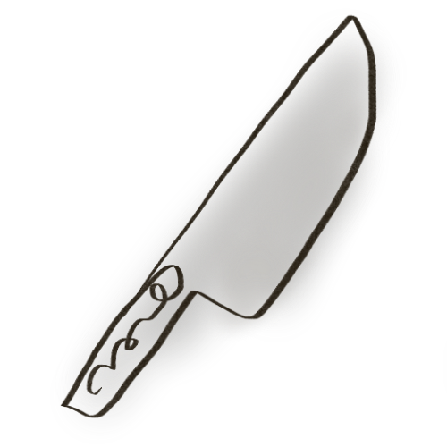
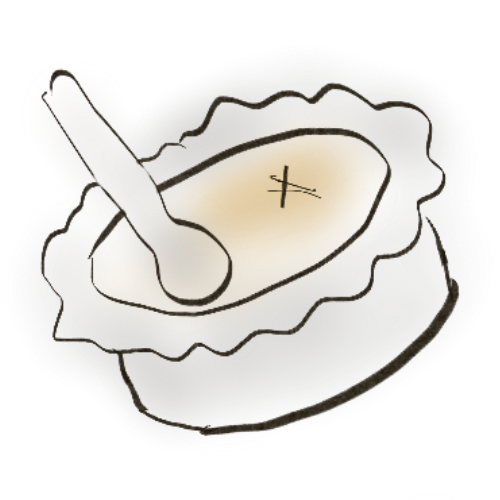
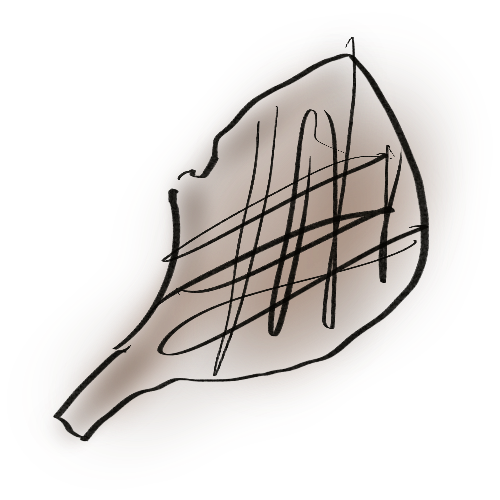
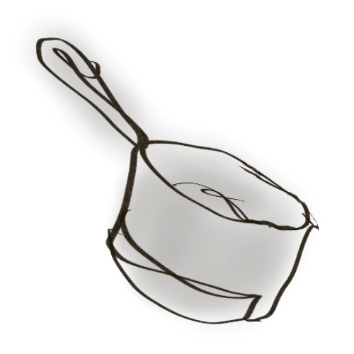
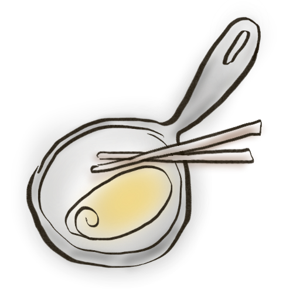
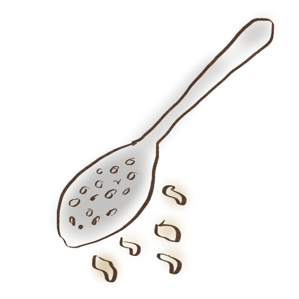
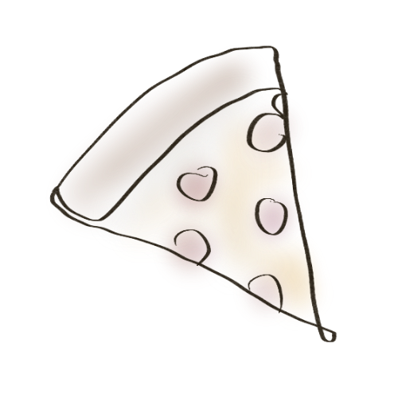
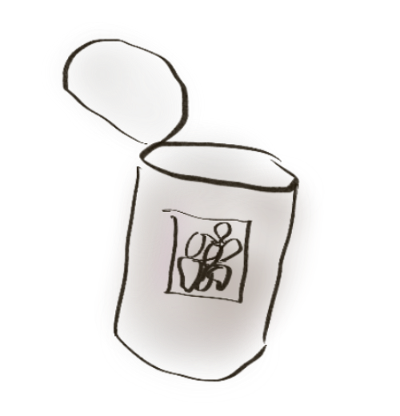

Cooking Tips
-

When cutting pasta, use polenta flour (cornmeal) before you cut it so you can fold it over and cut it when it is rolled up so it does not stick together. -

Use cane sugar for crème brûlée because less sweet and more caramelized. - Buy melons that begin to crack at the ends.
-

For grilled pork chops: soy sauce seasoning and salt and pepper and a little oil. Very little. -

For rice: one volume of rice and one and a half volume of chicken stock. Fry onion, fry rice, add stock, bring to boil, cook for eleven minutes, take off fire and let stand. Then add a bit butter and break up. -

Perfect French omelet: Butter, hot pan, mix like scrambled eggs. Fry a little bit. When it starts to take, don't touch no more, lift up the edges and lift the omelet and roll it by hitting the pan. To really be fancy, can brush with butter. - To make perfect broccoli, put in cold water, bring to boil, then take off fire and let sit with cover, checking to see if it is soft enough. Stays beautiful green color, does not brown.
-

For spaetzle, if dough too consistent, add milk. When the pieces float, they are finished. -

For pizza dough, work for ten minutes until rubbery. Stick a finger in it, it should come back up. -

Beans from a can: juice from the can cooked with onions, olive oil, garlic, tarragon, rosemary, salt, pepper, tomato sauce and a chicken bouillon cube unless you have good chicken stock. First fry onion and garlic and oil, then put in juice with bouillon cube and reduce by half.